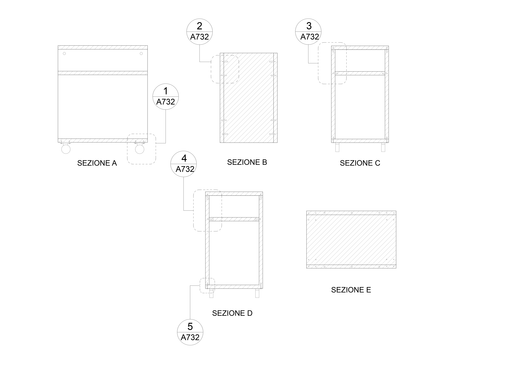
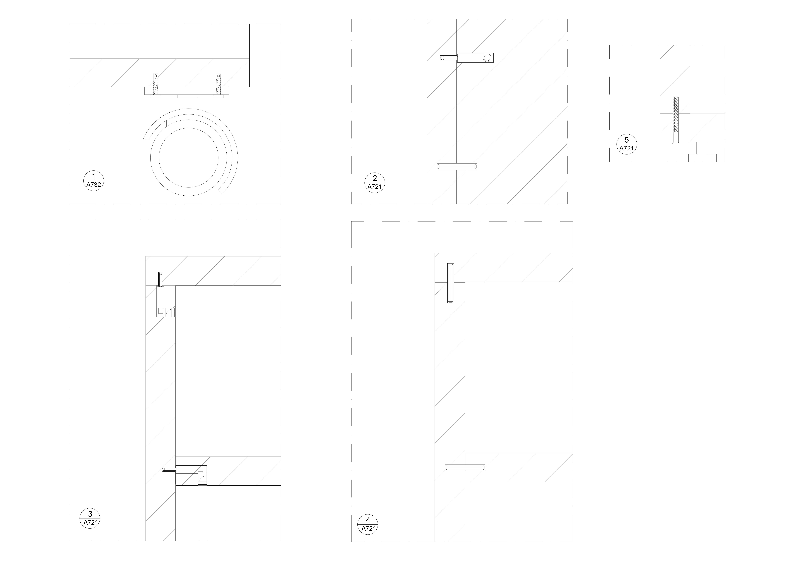
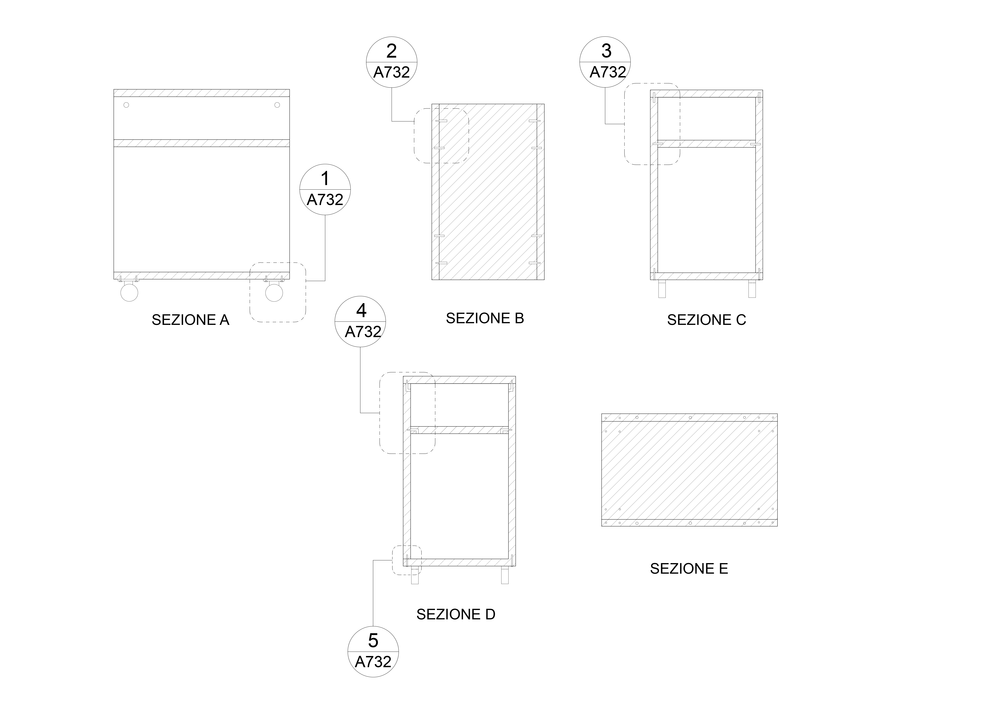
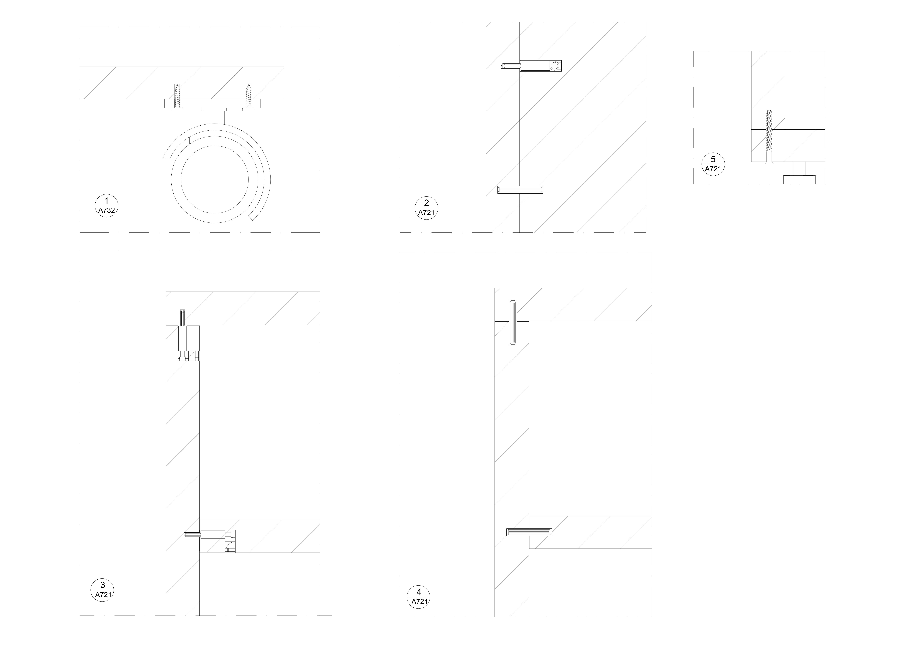
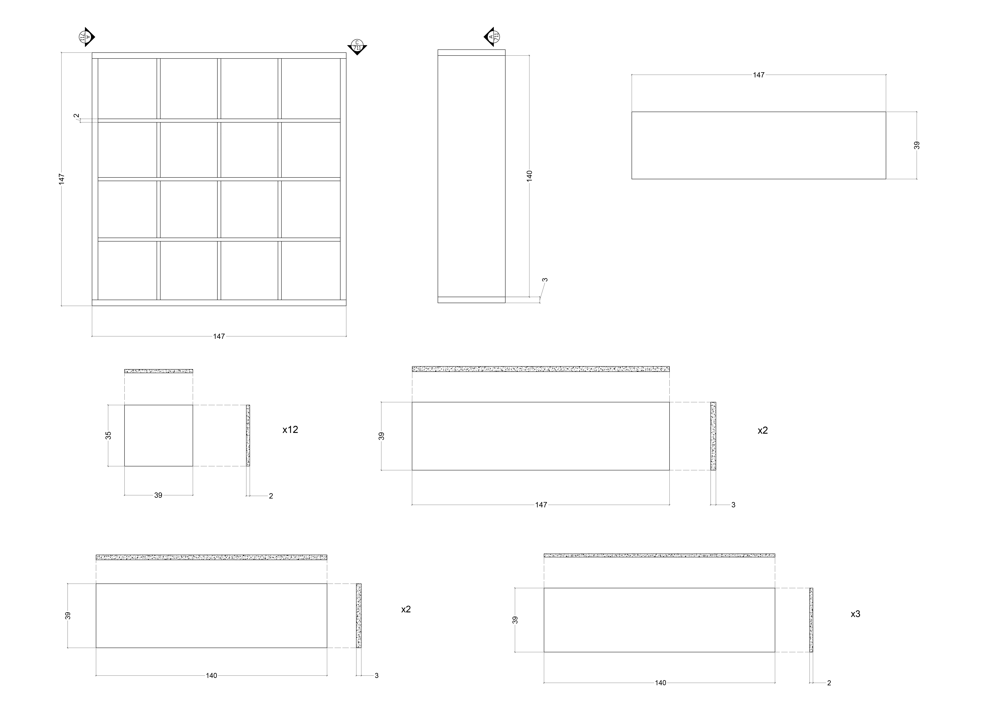
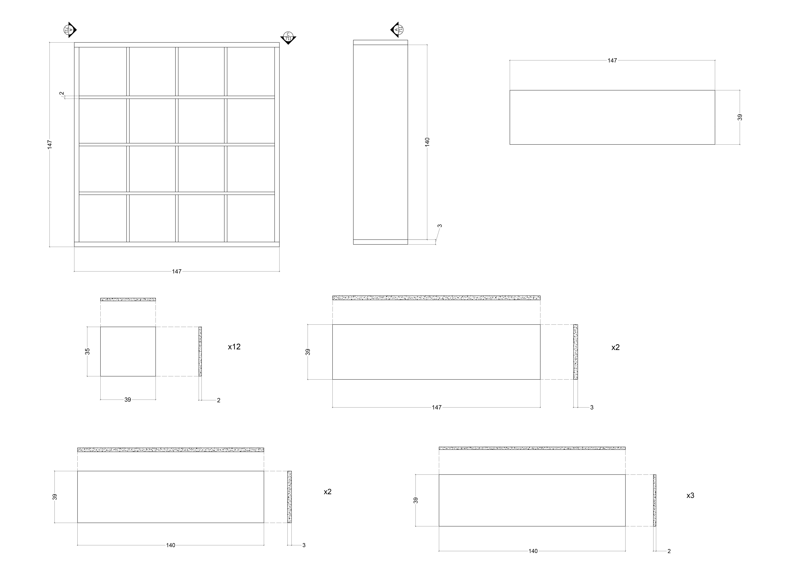

Struttura:
Testiera/pediera/sponda: Truciolare, Legno di pino, Impiallacciatura di frassino, Impiallacciatura di rovere, Mordente, Vernice acrilica, trasparente, Lacca acrilica, goffrata, Plastica ABS, Carta
Trave mediana: Acciaio galvanizzato
Base a doghe.
Doghe in multistrato: Impiallacciatura di faggio, Impiallacciatura di betulla.


Struttura:
Parti principali/Ripiano: Truciolare, Vernice acrilica, Plastica ABS
Base del ripiano: Fibra di legno, Lamina
 



Struttura:
Parti principali: Truciolare, Lamina
Pannello superiore: Truciolare, Lamina, Plastica ABS
Zoccolo posteriore: Truciolare
Pannello: Fibra di legno, Lacca acrilica goffrata, Lamina
Pannello dell'anta: Fibra di legno, Lamina
 

Strumenti e Metodi del Progetto - Alessia Tortoioli 871396